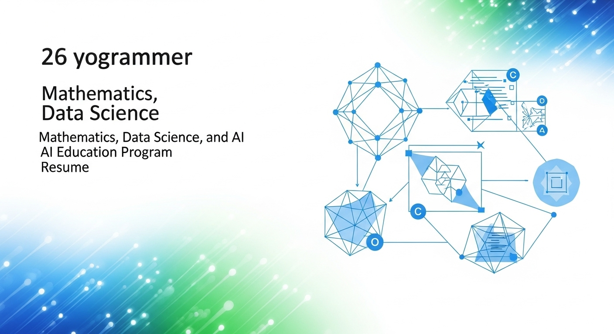

【26歳プログラマー向け】数理・データサイエンス・AI教育プログラムの履歴書活用法
導入
プログラマーとして数年の経験を積み、日々の業務にも慣れてきた26歳のあなた。目の前のタスクをこなす日々に充実感を感じながらも、ふと、これからのキャリアについて思いを巡らせる瞬間が増えてきたのではないでしょうか。
「今のままで、5年後、10年後も市場価値を保ち続けられるだろうか？」
「もっと新しい技術領域に挑戦して、自分の可能性を広げたい」
「AIやデータサイエンスという言葉を毎日のように聞くけれど、自分にはどう関係してくるんだろう？」
そんな漠然とした期待と不安が入り混じる気持ちを抱えているかもしれません。特に、AI技術が社会のあらゆる側面に浸透し始めている現代において、プログラマーという職種もその変化と無関係ではいられません。むしろ、その中心で変化を牽引していくべき存在だと言えるでしょう。
AIやデータサイエンスの分野は、まさに日進月歩。新しいアルゴリズムやツールが次々と登場し、その可能性は無限に広がっています。このエキサイティングな領域に、プログラミングスキルという強力な武器を持つあなたが足を踏み入れることができれば、これまでにない大きなキャリアアップを実現できる可能性に満ちています。
しかし、いざ「AIやデータサイエンスを学ぼう」と思っても、何から手をつければ良いのか、どこまで学べば「スキルがある」と認められるのか、そして、その努力をどうやってキャリアに結びつければ良いのか、具体的な道筋が見えにくいのも事実です。独学でオンライン教材をこなしたり、技術書を読み漁ったりしても、それが体系的な知識として身についているのか、そしてそれを転職活動などで客観的に証明するのは非常に難しいものです。
そこで、あなたのそんな悩みに一つの確かな答えを提示してくれるのが、今回ご紹介する「数理・データサイエンス・AI教育プログラム」です。これは、文部科学省が認定する公的な教育プログラムであり、あなたがAI時代を生き抜くための信頼できる羅針盤となり得ます。
この記事では、26歳というキャリアの転換点に立つプログラマーのあなたのために、以下の点を、落ち着いたトーンで、そして優しく丁寧に解説していきます。
- 数理・データサイエンス・AI教育プログラムとは一体何なのか？
- このプログラムを修了することで、あなたのキャリアにどんなメリットがあるのか？
- 学んだ成果を、転職活動で最も重要な書類である「履歴書」でどうアピールすれば良いのか？
- 数あるプログラムの中から、あなたに最適なものを選ぶための具体的な方法とは？
- 学習を始める前に知っておくべき注意点や、学習効果を最大化するための秘訣
この記事を読み終える頃には、あなたはAI・データサイエンスという未知の海へ漕ぎ出すための、具体的で信頼性の高い海図を手にしているはずです。さあ、あなたのキャリアの新たな可能性を切り開く旅へ、一緒に一歩を踏み出してみましょう。
プログラマーが知るべき数理・データサイエンス・AI教育プログラムとは

キャリアの次のステップとしてAIやデータサイエンス分野に興味を持ったとき、まず壁となるのが「何を、どのように、どこまで学べば良いのか」という学習の全体像が見えないことではないでしょうか。そんなあなたのための道しるべとなるのが、国がその品質を保証する「数理・データサイエンス・AI教育プログラム認定制度」です。まずは、この制度がどのようなものなのか、その基本からじっくりと見ていきましょう。
認定制度の概要
「数理・データサイエンス・AI教育プログラム認定制度」と聞くと、少し堅苦しい印象を受けるかもしれませんね。しかし、その本質は非常にシンプルで、あなたの学習を力強く後押ししてくれるものです。
この制度は、一言で言えば「大学や高等専門学校などが提供しているAI・データサイエンス関連の教育プログラムの内容を、国（文部科学省）が審査し、一定のレベルに達していると認めたものに『お墨付き』を与える制度」です。
この制度が生まれた背景には、日本の将来を見据えた大きな戦略があります。2019年に政府が策定した「AI戦略2019」では、AI時代に対応できる人材を育成することが国の重要な課題として掲げられました。しかし、各大学が独自にプログラムを提供しているだけでは、その質やレベルがバラバラになってしまい、学生や社会人がどのプログラムを選べば良いのか分かりにくいという問題がありました。また、企業側も、採用候補者が「AIを学びました」と言っても、その知識がどの程度のレベルなのかを客観的に判断するのが困難でした。
そこで、こうした課題を解決するために、文部科学省が中心となってこの認定制度がスタートしたのです。制度の目的は、大きく分けて二つあります。
一つは、教育の質の保証です。国が定めたモデルカリキュラムに基づいて、各大学のプログラムが体系的かつ実践的な内容になっているかを厳しく審査します。これにより、認定されたプログラムであれば、どこで学んでも一定水準以上の知識やスキルが身につくことが保証されます。あなたのような学習者にとっては、安心して学習に取り組めるという大きなメリットがあります。
もう一つは、学習成果の可視化と社会的な通用性の確保です。認定プログラムを修了すると、その事実を履歴書などに記載できるだけでなく、後述する「オープンバッジ」というデジタル証明書が発行されることもあります。これにより、あなたの学習成果が客観的に証明され、就職や転職活動において、企業に対して「私は国が認めたレベルのAI・データサイエンスの知識を持っています」と自信を持ってアピールできるようになるのです。
つまり、この認定制度は、あなたの学習努力を社会的に認められる「価値」へと変換してくれる、非常に信頼性の高い仕組みと言えるでしょう。プログラマーとしてのあなたの既存スキルに、この公的な認定という新たな付加価値を加えることで、キャリアの可能性は大きく広がっていくはずです。
リテラシーレベルと応用基礎レベルの違い
この認定制度には、学習の深さや対象者に応じて、大きく分けて「リテラシーレベル」と「応用基礎レベル」という2つのレベルが設定されています。プログラマーであるあなたがキャリアアップを目指す上で、どちらのレベルが自分にとって適切なのかを理解することは非常に重要です。それぞれの特徴を、具体的に比較しながら見ていきましょう。
リテラシーレベル：社会人としての基礎教養を身につける
まず「リテラシーレベル」ですが、これはAIやデータサイエンスが当たり前になった社会を生きる、すべての人に求められる基礎的な素養を身につけることを目的としています。対象は文系・理系を問わず、全ての大学 перво年生などを想定しています。
学習内容の中心は、以下のようになります。
- AI・データサイエンスの基本的な概念: AIとは何か、機械学習やディープラーニングはどういう仕組みなのか、といった基本的な考え方を学びます。
- 社会での活用事例: 自動運転、画像認識、医療診断支援、マーケティングなど、社会の様々な場面でAIやデータがどのように活用されているのかを学びます。
- データ倫理や法制度: 個人情報保護の重要性や、AIが引き起こす可能性のあるバイアス（偏り）の問題など、技術を使う上で守るべきルールや倫理観について学びます。
プログラミングや複雑な数式に深く立ち入ることは少なく、主に講義形式で知識を習得することが多いのが特徴です。
プログラマーであるあなたにとって、リテラシーレベルの学習は、AI・データサイエンスの世界の全体像を掴んだり、非エンジニアの同僚や顧客と話す際の共通言語を身につけたりする上で役立つでしょう。しかし、これを学んだからといって、すぐにAIエンジニアとして開発ができるようになるわけではありません。キャリアチェンジや専門性の向上を目指す上では、あくまで「入門編」という位置づけになります。
応用基礎レベル：専門分野で活用するための実践力を養う
一方、「応用基礎レベル」は、リテラシーレベルから一歩踏み込み、AI・データサイエンスの知識や技術を、自らの専門分野で実際に活用できる人材を育成することを目的としています。主に、情報系や理工系の学生、そしてあなたのような現役のプログラマーがキャリアアップを目指す際にターゲットとなるレベルです。
学習内容は、リテラシーレベルの知識を前提としつつ、より専門的かつ実践的になります。
- 数理的基礎: 微分積分、線形代数、確率・統計学など、機械学習アルゴリズムの根幹をなす数学的な理論を学びます。
- プログラミングとデータハンドリング: Python言語や、データ分析に必須のライブラリ（NumPy, Pandas, Matplotlibなど）の使い方を習得します。
- 機械学習・深層学習の実装: 回帰、分類、クラスタリングといった基本的な機械学習モデルや、ニューラルネットワークなどの深層学習モデルを、ライブラリ（Scikit-learn, TensorFlow, PyTorchなど）を使って実際に構築・評価するスキルを身につけます。
- 演習・PBL（Project Based Learning）: 理論を学ぶだけでなく、実際のデータセットを使った演習や、チームで課題解決に取り組むプロジェクト形式の学習が多く取り入れられています。
プログラマーであるあなたにとって、まさに「本命」となるのがこの応用基礎レベルです。あなたの持つプログラミングスキルという土台の上に、データサイエンスの理論と実践的な実装スキルを上乗せすることで、AIエンジニアや機械学習エンジニアへの道が具体的に見えてきます。履歴書に「応用基礎レベル修了」と記載することは、あなたが単にライブラリを使えるだけでなく、その背景にある理論まで体系的に理解していることの強力な証明となるのです。
プログラマーにとっての学習意義と必要性
では、なぜ「今」、プログラマーであるあなたが、この応用基礎レベルのプログラムを学ぶことに大きな意義があるのでしょうか。その理由は、単に流行りのスキルを身につけるという表面的なものではなく、あなたのプログラマーとしての根幹をより強く、太くしてくれる本質的な価値にあります。
意義１：思考の土台を再構築し、問題解決の解像度を上げる
プログラマーとして仕事をしていると、様々なライブラリやフレームワークを使って、いわば「魔法の箱」のように高度な機能を実現することが多いかもしれません。特に機械学習のライブラリは非常に優秀で、数行のコードで複雑な予測モデルを動かすことも可能です。
しかし、その「魔法の箱」の中身、つまりアルゴリズムがどのような数学的・統計的な原理で動いているのかを理解しているかどうかで、問題解決能力には天と地ほどの差が生まれます。
例えば、モデルの予測精度が思うように上がらない時、その原因はどこにあるのでしょうか。データの与え方（特徴量エンジニアリング）が悪いのか、モデルのパラメータ（ハイパーパラメータ）が適切でないのか、あるいはそもそも選択しているモデル自体が問題に適していないのか。理論的な背景を理解していれば、これらの問題に対して仮説を立て、論理的にアプローチすることができます。これは、ただやみくもにパラメータをいじったり、別のライブラリを試したりするのとは全く異なる、再現性の高いスキルです。
このプログラムで学ぶ数学や統計学は、あなたの思考に一本の太い幹を通してくれるようなものです。これまで点と点で捉えていた知識が線で結ばれ、より高次元で物事を考え、本質的な課題解決ができるエンジニアへと成長させてくれるでしょう。
意義２：異分野のプロフェッショナルとの「共通言語」を獲得する
AI開発の現場は、プログラマーだけで完結することはほとんどありません。データサイエンティスト、AI研究者、ビジネス部門の担当者、ドメインエキスパート（特定の業界の専門家）など、多様なバックグラウンドを持つ人々と協働するチーム開発が基本となります。
その際、非常に重要になるのが「共通言語」です。データサイエンティストが「このモデルは過学習（Overfitting）の傾向があるので、正則化（Regularization）を強める必要があります」と話した時に、その言葉の意味するところや技術的な背景を正確に理解できるかどうかで、コミュニケーションの質は劇的に変わります。
このプログラムで学ぶ知識は、まさにその共通言語の役割を果たします。あなたがデータサイエンスの基本的な語彙や考え方を身につけることで、チーム内の議論に主体的に参加できるようになり、よりスムーズで生産性の高い開発が可能になります。それは、単なる「実装担当者」から、プロジェクト全体を俯瞰し、より良いプロダクト作りに貢献できる「開発パートナー」へと、あなたの役割を進化させることに繋がります。
必要性：AIが組み込まれる未来のソフトウェア開発で主導権を握るために
これからのソフトウェア開発は、ほぼ全ての分野でAI技術が当たり前のように組み込まれていくでしょう。Webサービスにおけるレコメンド機能、業務システムにおける需要予測機能、モバイルアプリにおける画像認識機能など、枚挙にいとまがありません。
このような時代において、プログラマーに求められる役割も変化していきます。AIを単なる「APIとして呼び出す部品」としか認識していないプログラマーと、その内部構造や特性を理解した上でシステム全体を設計・実装できるプログラマーとでは、担える役割の大きさも、得られる評価も、そして将来的な市場価値も大きく異なってくることは想像に難くありません。
26歳という年齢は、プログラマーとしての基礎体力がしっかりと身につき、かつ新しい知識を吸収する柔軟性も高い、キャリアにおけるゴールデンエイジです。この絶好のタイミングで、数理・データサイエンス・AIという新たなスキルセットを体系的に身につけることは、未来のソフトウェア開発の主導権を握り、変化の波に乗りこなすための、最も確実で戦略的な自己投資と言えるでしょう。
プログラム修了で得られるキャリアアップのメリット
国が認める体系的な知識を身につけられることは分かりましたが、それが具体的にあなたのキャリアにどのようなプラスの影響をもたらすのでしょうか。ここでは、プログラムを修了することで得られる3つの大きなキャリアアップのメリットについて、より深く掘り下げていきましょう。
メリット１．AI・データサイエンス分野へのキャリアチェンジを加速
プログラマーとしての経験を活かし、AIエンジニアやデータサイエンティストといった、より専門性の高い職種へのキャリアチェンジを考えているあなたにとって、このプログラムは強力な追い風となります。
未経験からAI・データサイエンス分野へ転職しようとする際、多くの人が直面するのが「スキルの証明の壁」です。独学でオンライン講座をいくつか受講したり、数冊の技術書を読んだりしただけでは、採用担当者に「この人は本当に体系的な知識を持っているのだろうか？」「実務で通用するレベルなのだろうか？」という疑問を抱かせてしまうことが少なくありません。特にこの分野は、見様見真似でライブラリを動かすことと、その背景にある理論を理解して応用することの間に大きな隔たりがあるため、企業側も採用には慎重にならざるを得ないのです。
ここで、数理・データサイエンス・AI教育プログラム（特に応用基礎レベル）の修了が大きな意味を持ちます。履歴書に「文部科学省認定プログラム修了」の一文があるだけで、採用担当者に与える印象は劇的に変わります。それは、あなたが以下のような資質を持っていることの客観的な証明となるからです。
- 体系的な知識: 断片的な知識の寄せ集めではなく、数学・統計学の基礎から機械学習の実装まで、一貫したカリキュラムを学び終えたこと。
- 学習意欲と継続力: 一定期間、腰を据えて専門分野の学習に取り組むことができる主体性と粘り強さ。
- 基礎学力: プログラムで求められるレベルの数学的・論理的思考力の素養があること。
特に、あなたには「プログラミングスキル」という既に確立された強みがあります。多くのAI・データサイエンス未経験者がプログラミングの習得に苦労する中で、あなたはそのハードルを既にクリアしています。その上で、このプログラムによってデータサイエンスの体系的な知識を身につけたという「公的な証明」が加わることで、「プログラミングもできるし、データサイエンスの基礎理論も理解している即戦力候補」として、他の多くの未経験者から頭一つ抜け出した存在になることができるのです。
これは、転職活動における書類選考の通過率を大幅に高めるだけでなく、面接の場においても、あなたの学習への取り組みや熱意を具体的に語るための強力な根拠となります。キャリアチェンジという大きな挑戦において、このプログラムはあなたを目的地まで導いてくれる、信頼できるパスポートの役割を果たしてくれるでしょう。
メリット２．専門スキルを証明し市場価値を高める
キャリアチェンジだけでなく、プログラマーとして自身の市場価値をさらに高めたいと考えている場合にも、このプログラムは非常に有効です。現代の転職市場において、自身のスキルを客観的かつ信頼性のある形で証明できることは、極めて重要な要素です。
考えてみてください。あなたが採用担当者だとして、二人のプログラマーの履歴書を見比べているとします。二人とも同程度のプログラミング経験を持っていますが、一方は自己PR欄に「AIに興味があり、独学で勉強しています」と書いているだけ。もう一方は、資格欄に「文部科学省 数理・データサイエンス・AI教育プログラム（応用基礎レベル）修了」と明記しています。どちらの候補者により強く惹かれ、会って話を聞いてみたいと思うでしょうか。答えは明白でしょう。
この「国のお墨付き」という点は、他の民間資格やオンライン講座の修了証とは一線を画す、大きな信頼性の担保となります。企業側は、あなたが特定のベンダーのツールに偏らない、普遍的で本質的な知識を身につけていると判断しやすくなります。
この客観的なスキル証明は、あなたの市場価値、すなわち「年収」という形で具体的に反映される可能性を秘めています。AIやデータサイエンスのスキルを持つ人材は、多くの業界で需要が供給を上回っている状況が続いています。特に、しっかりとしたプログラミングスキルとデータサイエンスの素養を併せ持つ人材は希少価値が高く、企業も高い報酬を提示してでも獲得したいと考えています。
このプログラムを修了することで、あなたは自身のスキルセットを明確に定義し、市場価値を正しく評価してもらうための交渉材料を手にすることができます。例えば、転職時の年収交渉において、「私はプログラミングスキルに加え、国が認定したプログラムでデータ分析や機械学習の体系的な知識を習得しており、データに基づいた開発や提案が可能です。そのため、貴社に対してより高い付加価値を提供できると考えています」といった形で、説得力のある自己アピールが可能になります。
単に「できる」と主張するだけでなく、「公的に認められたレベルでできる」と証明できること。この差が、あなたのキャリアと年収を一段階上のステージへと引き上げるための、力強い推進力となるのです。
メリット３．プログラマーとしての専門性を広げ付加価値を向上
必ずしも転職やキャリアチェンジを考えていなくても、このプログラムで得られる知識は、現在のプログラマーとしてのあなたの仕事に深みと広がりを与え、組織内での付加価値を飛躍的に向上させます。
これまでのあなたは、仕様書に基づいて機能を実装する「実装者」としての役割が中心だったかもしれません。しかし、データサイエンスの視点を身につけることで、あなたはデータに基づいて課題を発見し、解決策を提案できる「問題解決者」へと進化することができます。
具体的な業務シーンを想像してみましょう。
- Webサービス開発の現場で: あなたが担当しているECサイトのユーザー行動ログ。これまでは単なる記録としてデータベースに眠っていたかもしれません。しかし、データ分析のスキルがあれば、そのログから「どのページを見たユーザーが商品を購入しやすいか」「どんな属性のユーザーが離脱しやすいか」といったインサイトを抽出し、「ここのUIをこう改善すれば、コンバージョン率が上がるのではないでしょうか」といった具体的な改善提案ができます。さらには、ユーザーの購買履歴から、パーソナライズされた商品を推薦するレコメンドエンジンを実装する、といった新たな価値創造にも繋げられます。
- 業務システム開発の現場で: あなたが開発・保守している生産管理システム。過去の生産実績や設備の状態、天候などのデータを分析することで、将来の需要を予測したり、設備の故障を予知したりするモデルを構築できるかもしれません。これにより、在庫の最適化や生産計画の精度向上、予期せぬダウンタイムの削減といった、事業に直接的に貢献する大きな改善を実現できます。
- モバイルアプリ開発の現場で: カメラ機能を使ったアプリを開発しているなら、画像認識モデルを組み込むことで、撮影したものを自動で分類したり、特定の物体を検出したりする機能を実装できます。これにより、ユーザー体験を劇的に向上させることが可能です。
このように、データサイエンスの知識は、あなたのプログラミングスキルと掛け合わされることで、これまでとは全く異なる次元の価値を生み出す「触媒」の役割を果たします。あなたはもはや、言われたものを作るだけの存在ではありません。データという客観的な根拠を元に、ビジネスの成長に貢献する提案ができる戦略的なパートナーへと変貌を遂げるのです。
このような動きは、当然ながら社内での評価にも直結します。プロジェクトにおいてより上流の工程から関われるようになったり、新しい技術を取り入れたプロジェクトのリーダーを任されたりと、あなたの活躍の場は大きく広がっていくでしょう。プログラムの修了は、あなたのプログラマーとしての専門性を深化させ、唯一無二の存在へと押し上げるための、確かな一歩となるのです。
数理・データサイエンス・AI教育プログラムの履歴書記載方法
プログラムを無事に修了し、確かな知識を身につけた。次なるステップは、その成果を転職活動などで効果的にアピールすることです。ここでは、採用担当者の目に留まり、あなたの価値を最大限に伝えるための具体的な履歴書・職務経歴書への記載方法について、詳しく解説していきます。
認定制度に基づく正式な履歴書記載例
学んだ成果を公的に証明する第一歩は、履歴書へ正確に記載することです。単に「AIの勉強をしました」と書くのとは雲泥の差があります。信頼性を担保するためにも、認定制度の正式名称を用いて、誰が見ても分かるように記述することが重要です。
記載する場所は、履歴書の「免許・資格」欄が最も一般的で適切でしょう。もし、学歴欄にスペースの余裕があれば、最終学歴の下などに追記する形も考えられます。
【免許・資格欄への記載例】
令和X年X月 文部科学省 数理・データサイエンス・AI教育プログラム（応用基礎レベル）認定
「〇〇大学 〇〇データサイエンスプログラム」修了この記載例のポイントは以下の4点です。
- 修了年月を明記する: いつ習得したスキルなのかを明確にします。西暦でも和暦でも構いませんが、履歴書全体で統一しましょう。
- 制度の正式名称を記載する: 「文部科学省 数理・データサイエンス・AI教育プログラム」と正確に書くことで、この資格が国の認定制度に基づく公的なものであることを示します。これにより、採用担当者は一目でその信頼性を理解できます。
- レベルを明記する: 「（応用基礎レベル）」と記載することは非常に重要です。これにより、あなたが基礎教養としてのリテラシーレベルに留まらず、専門分野への応用を視野に入れた、より高度で実践的な知識を習得していることをアピールできます。
- 受講したプログラムの正式名称を記載する: 「〇〇大学 〇〇データサイエンスプログラム」のように、実際にあなたが受講し、修了したプログラム名を正確に書きます。これにより、採用担当者が興味を持った際に、そのプログラムの内容を具体的に調べることが可能になります。
履歴書はスペースが限られているため、まずはこの形で簡潔に事実を記載します。そして、より詳細なアピールは、職務経歴書の自己PR欄などで行うのが効果的です。
【職務経歴書でのアピール例（自己PR欄）】
プログラマーとしての開発経験に加え、将来の技術トレンドを見据え、文部科学省認定の「数理・データサイエンス・AI教育プログラム（応用基礎レベル）」を修了いたしました。
このプログラムでは、機械学習の根幹をなす線形代数や統計学といった数理的基礎から、Pythonのライブラリ（Pandas, Scikit-learn, TensorFlow）を用いたデータ前処理、モデル構築、精度評価までの一連のプロセスを体系的に学習しました。特に、〇〇というテーマの最終プロジェクトでは、△△のデータセットを用いて顧客の離反予測モデルを構築し、精度XX%を達成しました。
この経験を通じて得たデータ分析能力と機械学習の実装スキルを、貴社の〇〇事業におけるデータ駆動型のサービス改善や新機能開発に活かし、事業成長に貢献したいと考えております。
このように、職務経歴書では、単に修了したという事実だけでなく、「何を学び」「何ができるようになり」「それを入社後どう活かしたいか」というストーリーを具体的に語ることが、採用担当者の心に響くアピールに繋がります。
オープンバッジを活用したスキル証明の方法
紙の履歴書や職務経歴書に加え、現代の転職活動ではデジタルツールを駆使した自己アピールがますます重要になっています。そこで非常に有効なのが「オープンバッジ」の活用です。
オープンバッジとは、一言で言うと「デジタル化されたスキル証明書」です。あなたがプログラムを修了し、特定のスキルを習得したことを、大学などの発行機関が電子的に証明してくれるものです。画像データのように見えますが、その内部には、
- 誰が（受領者）
- 何を（習得スキル）
- いつ（取得年月日）
- 誰から（発行者）
- どのような基準で（認定基準）
といった情報が埋め込まれており、ブロックチェーンなどの技術によって偽造や改ざんが極めて困難になっています。
このオープンバッジには、従来の紙の証明書にはない、多くのメリットがあります。
- 手軽な共有: LinkedInやFacebookといったビジネスSNSのプロフィールに簡単に掲載できます。また、メールの署名や、自身のポートフォリオサイトに埋め込むことも可能です。
- 高い信頼性: 採用担当者がバッジをクリックすると、発行機関のウェブサイトに遷移し、そのバッジが本物であることや、どのようなスキルを証明するものなのかといった詳細な情報を即座に確認できます。これにより、あなたのスキルの信頼性が格段に向上します。
- スキルの可視化: 複数のオープンバッジを取得していくことで、あなたのスキルセットが一目で分かるようになります。これにより、採用担当者やヘッドハンターの目に留まりやすくなる効果も期待できます。
多くの大学では、数理・データサイエンス・AI教育プログラムの修了者に対して、このオープンバッジを発行しています。もしあなたがプログラムを修了した際には、必ずオープンバッジが発行されるかを確認し、積極的に活用しましょう。
具体的な活用方法としては、まずLinkedInのプロフィールを充実させ、「ライセンスと認定」のセクションにオープンバッジを追加することをお勧めします。LinkedInは多くの企業の採用担当者が候補者を探すために利用しているため、ここに掲載しておくことで、あなたに興味を持った企業から直接スカウトが届く可能性も高まります。また、転職サイトのプロフィール欄に、オープンバッジの公開URLを記載しておくのも良いでしょう。
オープンバッジは、あなたの学習成果を世界標準のフォーマットで証明し、デジタルの世界であなたという人材の価値を雄弁に語ってくれる、強力なアピールツールなのです。
採用担当者に響く効果的なアピールポイント
履歴書への記載やオープンバッジの活用は、いわば「型」の部分です。しかし、本当に採用担当者の心を動かし、「この人に会ってみたい」と思わせるためには、その背景にあるあなたの「想い」や「ストーリー」を伝えることが不可欠です。ここでは、面接などの場で語るべき、効果的なアピールポイントを3つの切り口からご紹介します。
アピールポイント１：学習の「動機」を語り、主体性と成長意欲を示す
採用担当者が知りたいのは、あなたが単に流行に乗って学習したのか、それとも明確な目的意識を持って取り組んだのか、という点です。なぜ、多忙なプログラマーとしての仕事の傍ら、時間と労力をかけてまでこのプログラムを学ぼうと思ったのか。その動機を具体的に語ることで、あなたの仕事に対する真摯な姿勢や、自律的に成長しようとする意欲を伝えることができます。
【語り方の例】
「現職でWebサービスの開発に携わる中で、膨大なユーザー行動ログが蓄積されているにも関わらず、それを十分に活用できていないことにもどかしさを感じていました。感覚的な改善ではなく、データという客観的な根拠に基づいてUI/UXを改善し、より本質的な価値をユーザーに提供したいと強く思うようになりました。そのためには、付け焼き刃の知識ではなく、統計学などの基礎から体系的にデータサイエンスを学ぶ必要があると考え、本プログラムの受講を決意しました。」
このように、自身の業務経験と結びつけて学習動機を語ることで、あなたの課題発見能力と、それを解決しようとする主体性を強く印象づけることができます。
アピールポイント２：習得した「スキル」を具体的に語り、即戦力性をアピール
「データ分析ができます」という抽象的な表現では、採用担当者はあなたのスキルレベルを具体的にイメージできません。プログラムを通じて、具体的にどのような技術や手法を、どのレベルまで扱えるようになったのかを、専門用語を交えながら分かりやすく説明することが重要です。
【語り方の例】
「プログラムでは、PythonとScikit-learnを用いて、回帰・分類・クラスタリングといった基本的な機械学習モデルの実装を一通り経験しました。特に、〇〇の演習では、データセットの前処理段階で欠損値補完や特徴量スケーリングの重要性を学び、ハイパーパラメータチューニング手法であるグリッドサーチを用いてモデルの精度を向上させるプロセスを実践しました。TensorFlowを用いた簡単なニューラルネットワークの構築も経験しており、基礎的な深層学習の概念も理解しております。」
このように、使用したライブラリ名や具体的な技術手法、そしてそこで得た学びを語ることで、あなたの知識が単なる座学に留まらない、実践的なスキルであることを示すことができます。
アピールポイント３：「貢献意欲」を語り、企業とのマッチング度を高める
最後に、そして最も重要なのが、学んだスキルを応募先の企業でどのように活かし、貢献したいのかという未来志向のビジョンを語ることです。そのためには、事前に入念な企業研究を行い、その企業が抱える課題や事業内容と、自身のスキルをどう結びつけられるかを考えておく必要があります。
【語り方の例】
「貴社が注力されている〇〇サービスのさらなるグロースのために、私のデータ分析スキルが貢献できると考えております。プログラムで培った顧客データ分析の経験を活かし、ユーザーセグメンテーションを行い、各セグメントに最適化されたマーケティング施策の立案を技術的な側面からサポートしたいです。将来的には、ユーザーの行動予測モデルを構築し、解約率の低下やLTV（顧客生涯価値）の向上に直接的に貢献できるような開発に挑戦したいと考えております。」
このように、企業の事業内容に具体的に踏み込み、自分のスキルがどのように貢献できるかを熱意を持って語ることで、採用担当者はあなたが入社後に活躍する姿を鮮明にイメージすることができます。これは、あなたが単なるスキルを持った人材ではなく、企業の成長を共に目指せる「仲間」であることをアピールする上で、非常に効果的な方法です。
あなたに合った数理・データサイエンス・AI教育プログラムの選び方
この制度に興味を持ち、「自分も受講してみたい」と考え始めたあなた。次なるステップは、全国の大学が提供している数多くの認定プログラムの中から、自分に最も合った一つを見つけ出すことです。ここでは、あなたの目的やスキルレベルに合わせた、賢いプログラムの選び方を3つの視点から解説します。
選び方１．学習レベルに応じたプログラムの種類と特徴
まず基本となるのが、自分の目的と現在のスキルレベルに合ったプログラムを選ぶことです。前述の通り、プログラムには大きく「リテラシーレベル」と「応用基礎レベル」がありますが、プログラマーとしてのキャリアアップを目指す26歳のあなたには、迷わず「応用基礎レベル」を選択することをお勧めします。
しかし、「応用基礎レベル」と一括りに言っても、その中身は大学やプログラムによって千差万別です。それぞれの特色を理解し、自分の学習スタイルや目指す方向に合っているかを見極めることが重要になります。応用基礎レベルのプログラムは、大まかに以下の3つのタイプに分類できます。
１．理論重視型プログラム
このタイプのプログラムは、機械学習やAIのアルゴリズムを支える数学的・統計的な理論の理解に重点を置いています。微分積分、線形代数、確率統計といった基礎科目を時間をかけてじっくりと学び、なぜそのアルゴリズムがうまく機能するのか、その本質的な原理を深く探求します。
- 向いている人:
- 数学や理論的な探求が好きで、物事の根本を理解したいという知的好奇心が強い人。
- 将来的にAI研究者や、新しいアルゴリズム開発に携わりたいと考えている人。
- これまで数学に苦手意識があり、この機会に基礎からしっかりと学び直したいと考えている人。
- 特徴: 講義形式の授業が多く、数式を用いた証明や理論的な課題が出されることがあります。プログラミング演習もありますが、理論を実践で確認するという位置づけが強い傾向にあります。
２．実践重視型プログラム
こちらは理論の学習も行いますが、それ以上に、実際のデータを使って手を動かしながら学ぶことに重きを置いたプログラムです。ハンズオン形式の演習や、チームで課題解決に取り組むPBL（Project Based Learning）、企業から提供されたリアルな課題に取り組むケーススタディなどがカリキュラムの中心となります。
- 向いている人:
- とにかく早く実践的なスキルを身につけ、現場で使える武器を手に入れたい人。
- 一人で黙々と学ぶよりも、仲間と協力しながら学習を進めたい人。
- 学んだ成果をポートフォリオとして形にしたいと考えている人。
- 特徴: プログラミング演習の比率が高く、最終成果物として分析レポートやWebアプリケーションの開発を課されることが多いです。Kaggleなどのデータ分析コンペティションへの参加を推奨・サポートしてくれる場合もあります。
３．特定ドメイン特化型プログラム
これは、特定の産業分野（ドメイン）におけるデータ活用に特化したプログラムです。例えば、「医療データサイエンス」「金融工学とAI」「製造業におけるDX人材育成」といった形で、その分野特有のデータや課題、分析手法を深く学びます。
- 向いている人:
- 既に関心のある業界や、将来進みたい分野が明確に決まっている人。
- 現在の職場で特定のドメイン知識を持っており、それにデータサイエンスのスキルを掛け合わせたいと考えている人。
- 特徴: その分野の専門家が講師を務めることが多く、業界の最新動向や現場で使われている実践的なノウハウに触れることができます。修了後のキャリアパスも、その特定ドメインに直結しやすいというメリットがあります。
まずは自分がどのタイプに当てはまるのか、どのような学習スタイルを好み、将来どのようなキャリアを歩みたいのかを自己分析することから始めましょう。それが、数ある選択肢の中から最適なプログラムを見つけるための第一歩となります。
選び方２．実践的なスキルが身につくプログラムの見極め方
どのタイプのプログラムを選ぶにせよ、最終的にあなたの価値を高めるのは、知識を現実に適用できる「実践力」です。机上の空論で終わらせない、本当に身になるプログラムを見極めるためには、ウェブサイトの情報だけでなく、シラバス（講義計画）を丹念に読み解くことが不可欠です。
シラバスを確認する際に、特に注目すべきチェックポイントを以下に挙げます。
- 使用するプログラミング言語とライブラリ:
- データサイエンスの世界ではPythonがデファクトスタンダードです。カリキュラムの中心がPythonになっているかを確認しましょう。
- 具体的にどのようなライブラリを扱うのかも重要です。データ操作には
NumPyやPandas、可視化にはMatplotlibやSeaborn、機械学習にはScikit-learn、深層学習にはTensorFlowやPyTorchといった、現場で広く使われているライブラリが網羅されているかを確認しましょう。
- 演習やハンズオンの割合:
- 講義と演習の時間の比率はどのくらいか。シラバスには通常、各回の授業内容が記載されています。「講義」だけでなく、「演習」「実習」「グループワーク」といった記述が豊富に含まれているプログラムは、実践力を重視している証拠です。
- 扱うデータセットの種類:
iris（アヤメの分類）やTitanic（タイタニック号の生存者予測）といった、学習用の有名なデータセットだけでなく、より現実世界に近い、複雑でノイズの多いデータを扱う機会があるかどうかもポイントです。プログラムによっては、企業と連携し、実際のビジネスデータを（匿名化した上で）使用する演習を取り入れている場合もあります。
- チーム開発やプロジェクトの有無:
- 個人での学習だけでなく、チームで一つの課題に取り組む機会があるかは非常に重要です。実際の現場ではチーム開発が基本であり、他のメンバーと協力して分析を進めたり、役割分担をしたりする経験は、技術スキルと同じくらい価値があります。
- 最終成果物の要件:
- プログラムの最後に、どのようなアウトプットが求められるのかを確認しましょう。「レポート提出」だけでなく、「分析結果のプレゼンテーション」や「実際に動作するアプリケーションの開発」、「GitHubでのコード公開」などが課されている場合、それはあなたのポートフォリオに直接追加できる貴重な成果となります。
これらのポイントを一つひとつ確認し、比較検討することで、プログラムの広告文句に惑わされず、その本質的な価値を見抜くことができます。可能であれば、プログラムの担当教員に直接問い合わせたり、オンライン説明会に参加して質問したりすることで、より深い情報を得ることもお勧めします。
選び方３．プログラム修了後のキャリアパスを考慮した選択基準
プログラムを選ぶことは、単にスキルを学ぶことだけでなく、あなたの未来のキャリアを設計する上での重要な戦略的判断です。そのため、プログラムの内容だけでなく、その先にあるキャリアパスまで見据えて選択することが賢明です。
１．自身の目指すキャリア像を明確にする
まず、あなた自身がプログラム修了後にどのような姿になっていたいのかを具体的にイメージしましょう。
- 機械学習エンジニア: Webサービスやアプリケーションに機械学習モデルを組み込み、安定的に運用する役割。プログラミングスキル、MLOps（機械学習基盤の構築・運用）の知識が重要になります。→ プログラミング演習やシステム実装に関する内容が豊富なプログラムが適しています。
- データサイエンティスト: ビジネス課題を理解し、データを分析して課題解決に繋がる知見を見つけ出し、意思決定を支援する役割。統計的な知識、ビジネス理解力、コミュニケーション能力が重要になります。→ 統計学の理論や、ビジネスケーススタディを多く扱うプログラムが適しています。
- AIスキルを持つプログラマー（現職でのステップアップ）: 現在のプログラマーとしての業務に、データ分析やAIの視点を加えて付加価値を高める。→ 特定ドメイン特化型のプログラムや、現在の業務内容と関連性の高い技術を学べるプログラムが適しています。
このように、目指すゴールによって、最適なプログラムは変わってきます。
２．大学のキャリアサポート体制を確認する
大学によっては、プログラム修了生に対して手厚いキャリアサポートを提供している場合があります。これも重要な選択基準の一つです。
- 修了生向けのキャリアイベントやセミナー: 企業の人事担当者を招いた合同説明会や、現場で活躍する卒業生との交流会などが開催されているか。
- 企業との連携: 特定の企業と提携し、インターンシップの機会を提供していたり、共同でプロジェクトを行っていたりするか。こうしたプログラムは、修了後の就職・転職に直結しやすいという大きなメリットがあります。
- 教員のネットワーク: 指導教員が産業界との強いつながりを持っている場合、推薦や紹介といった形でキャリアの道が開ける可能性もあります。教員のプロフィールや研究実績などを確認してみるのも良いでしょう。
３．修了生の進路実績を参考にする
もし公開されていれば、そのプログラムを修了した先輩たちがどのような企業や職種に進んでいるのかを確認することは、非常に有益な情報となります。修了生の進路実績は、そのプログラムが社会からどのように評価されているかを示す、一つの客観的な指標です。自分が目指す業界や企業への就職実績が多ければ、そのプログラムはあなたのキャリア目標達成の助けとなる可能性が高いと言えるでしょう。
自分に合ったプログラムを選ぶことは、時間と費用を投資する上で最も重要なプロセスです。焦らず、じっくりと情報収集と自己分析を行い、あなたのキャリアにとって最良の選択をしてください。
プログラム受講前に知っておきたい注意点とデメリット
どんなに素晴らしい制度やプログラムであっても、必ず光と影の両面があります。期待に胸を膨らませて学習を始めたものの、「こんなはずじゃなかった」と後悔しないために、受講を決める前に知っておくべき現実的な注意点やデメリットについて、誠実にお伝えします。これらを事前に理解し、対策を立てておくことが、学習を成功に導く鍵となります。
デメリット１．学習時間と費用負担の現実と計画の立て方
まず直面する最も現実的な課題が、学習時間の確保と費用の問題です。プログラマーとして日々の業務をこなしながら、さらに新しい分野の学習を進めるのは、想像以上に大変なことです。
学習時間の確保という現実
応用基礎レベルのプログラムは、大学の単位として認定される本格的な教育内容であり、相応の学習時間が求められます。一般的に、1単位あたり45時間の学習時間（講義時間を含む）が標準とされています。例えば、6単位分のプログラムであれば、合計で270時間程度の学習が必要になる計算です。これを半年（約25週）で修了する場合、単純計算で週に10時間以上の学習時間を確保する必要があります。
平日の仕事が終わった後の夜や、週末の貴重な休日を学習に充てることになります。友人との飲み会や趣味の時間を削らなければならない場面も出てくるでしょう。この継続的な努力を続けるためには、強い意志と、それを支える具体的な計画が不可欠です。
【計画の立て方】
- 現状の可視化: まず、1週間の自分の時間の使い方を書き出してみましょう。仕事、通勤、睡眠、食事、プライベートなど、何にどれくらいの時間を使っているかを把握します。
- 学習時間の捻出: 可視化したタイムスケジュールの中から、学習に充てられる「スキマ時間」や「まとまった時間」を見つけ出します。例えば、「平日は帰宅後の2時間を学習に充てる」「土曜の午前中は集中して学習する」といった具体的なルールを決めます。
- 無理のないスケジュール: 最初から完璧を目指さず、少し余裕を持たせた計画を立てることが継続のコツです。「週に1日は完全に休む日を作る」など、心身をリフレッシュする時間も計画に組み込みましょう。
- 周囲の理解を得る: 家族やパートナー、親しい友人には、学習を始めることを事前に伝え、理解と協力を得ておくと、精神的な負担が軽くなります。
費用負担という現実
プログラムの受講費用は、提供する大学や内容によって大きく異なります。国立大学か私立大学か、オンラインか対面かなどによっても変わりますが、数万円から数十万円程度の費用がかかるのが一般的です。これは、決して安い投資ではありません。
【計画の立て方】
- 公的支援制度の活用: あなたの学習投資を支援してくれる制度があります。代表的なのが、厚生労働省の「教育訓練給付金制度」です。これは、一定の条件を満たす雇用保険の被保険者（または被保険者であった方）が、厚生労働大臣の指定する教育訓練を受講し修了した場合に、支払った費用の一部が支給される制度です。多くの大学プログラムがこの制度の対象となっていますので、自分が受給資格を満たすか、また希望するプログラムが対象講座になっているかを必ず確認しましょう。
- 予算計画: 受講料だけでなく、参考書の購入費や、もし対面授業であれば交通費なども考慮に入れた、全体の予算を立てます。その上で、毎月の収入から計画的に費用を捻出できるか、貯蓄から支払うかを検討します。
時間も費用も、あなたの貴重なリソースです。学習を始める前に、これらの負担を乗り越えられるか、そしてそのための具体的な計画を立てられるかを、冷静に自問自答することが重要です。
デメリット２．プログラム内容と自身の目標とのミスマッチを防ぐには
「AI・データサイエンスが流行っているから」「キャリアアップに繋がりそうだから」といった漠然とした動機だけでプログラムを選んでしまうと、学習の途中で「自分が学びたかったのはこれじゃないかもしれない」というミスマッチが生じる危険性があります。
例えば、あなたは実践的なWebアプリ開発への応用を学びたかったのに、選んだプログラムが数学的な理論の証明ばかりを扱う内容だったら、学習へのモチベーションを維持するのは難しいでしょう。逆に、アルゴリズムの根源的な理解を求めていたのに、ライブラリの使い方をなぞるだけの演習ばかりでは、物足りなさを感じてしまうかもしれません。
このようなミスマッチは、貴重な時間と費用を無駄にしてしまうだけでなく、新しい分野への挑戦意欲そのものを削いでしまうことにも繋がりかねません。
【ミスマッチを防ぐための具体的なアクション】
- 徹底的な自己分析: なぜ自分はAI・データサイエンスを学びたいのか？ 学んだ知識を使って、具体的にどんなことを実現したいのか？ 5年後、どのようなエンジニアになっていたいのか？ これらの問いに対して、自分なりの答えを紙に書き出すなどして、学習の目的とゴールを明確に言語化しましょう。これが、プログラム選びの最も重要な羅針盤となります。
- 多角的な情報収集:
- 公式情報を鵜呑みにしない: 大学のウェブサイトやパンフレットは、当然ながら良い面を強調して書かれています。その情報をベースにしつつも、より客観的な情報を集める努力をしましょう。
- シラバスを精読する: 前述の通り、シラバスにはプログラムの具体的な内容が詰まっています。各回のテーマ、使用する教材、評価方法などを詳細に確認し、自分の求める学習内容と合致しているかを吟味します。
- 説明会やオープンキャンパスに参加する: 担当教員やプログラムの運営担当者に直接質問できる絶好の機会です。授業の雰囲気、学生のサポート体制、修了生のキャリアなど、ウェブサイトだけでは分からない生きた情報を得ることができます。疑問点は遠慮せずに、納得がいくまで質問しましょう。
- SNSやブログでの評判調査: Twitterなどでプログラム名や担当教員名を検索すると、実際に受講した人や修了生の感想が見つかることがあります。もちろん、個人的な意見なので全てを信じるのは危険ですが、複数の意見を参考にすることで、プログラムのリアルな姿が見えてくることがあります。
- 専門家への相談:
- もしあなたの周りに、既にデータサイエンティストやAIエンジニアとして働いている知人がいれば、ぜひ相談してみましょう。現場のプロの視点から、そのプログラムのカリキュラムが実践的かどうか、あなたのキャリア目標に合っているかなど、貴重なアドバイスをもらえるはずです。
- キャリア相談のサービスや、IT分野に強い転職エージェントに相談してみるのも一つの手です。多くの社会人学習の事例を見ているプロの視点から、客観的な意見をもらえるかもしれません。
手間を惜しまず、これらのアクションを丁寧に行うことで、あなたとプログラムの間のミスマッチを最小限に抑え、実りある学習体験に繋げることができるでしょう。
デメリット３．認定制度だけでは不十分な実践力の重要性
最後に、心に留めておいてほしい最も重要な注意点です。それは、「プログラムの修了」や「認定」は、決してゴールではないということです。それはあくまで、AI・データサイエンスの世界へのスタートラインに立ったことを示す「証明書」に過ぎません。
企業が採用の場で本当に見ているのは、認定証そのものではなく、その知識を使って現実の課題を解決できる「実践力」です。いくら立派なプログラムを修了していても、面接で「このデータを使って、何か面白い分析をしてみてください」と言われた時に何もできなければ、評価されることはありません。
プログラムで学ぶ知識は、いわば料理における「レシピ」や「調理器具の使い方」のようなものです。レシピを暗記し、包丁の正しい持ち方を知っているだけでは、美味しい料理は作れません。実際に様々な食材に触れ、何度も失敗を繰り返しながら自分で調理をしてみることで、初めて本当に「料理ができる」と言えるようになります。
データサイエンスも全く同じです。プログラムの課題をこなすだけでなく、そこから一歩踏み出して、自分自身で課題を見つけ、データを集め、試行錯誤しながら分析やモデル構築に取り組む経験こそが、あなたの血肉となり、他者との差別化に繋がる「本物のスキル」を形作ります。
この認定制度を過信し、「これを取れば安泰だ」と考えてしまうと、そこで成長は止まってしまいます。認定は、あくまであなたの努力を後押ししてくれる強力なサポーターであり、実践力を磨くための土台作りの機会だと捉えましょう。プログラムの学習と並行して、あるいは修了後に、後述するポートフォリオ作成など、自ら手を動かす活動に積極的に取り組む意識を常に持っておくことが、この学習投資を成功させる上で不可欠な心構えと言えるでしょう。
プログラム学習効果を最大化しキャリアにつなげる方法
プログラムで得た知識を単なる「資格」で終わらせず、あなたのキャリアを飛躍させるための本物の「武器」に変えるために。ここでは、学習効果を最大化し、具体的なキャリアチェンジやステップアップに繋げるための、3つの実践的なアクションプランをご紹介します。
履歴書以外のポートフォリオ作成で実践力をアピール
採用担当者が履歴書の「認定プログラム修了」という記述であなたに興味を持った後、次に見たいのは間違いなく「で、具体的に何ができるの？」という点です。その問いに対する最も雄弁な答えとなるのが、あなたの実践力を証明する「ポートフォリオ」です。
ポートフォリオとは、あなたのスキルや実績をまとめた作品集のことです。プログラマーであれば、自身が開発したWebサイトやアプリケーション、GitHubのアカウントなどがそれに当たります。AI・データサイエンス分野においては、自身で取り組んだデータ分析や機械学習プロジェクトの成果物をまとめたものがポートフォリオとなります。
これは、単にプログラムの課題を提出するのとは訳が違います。あなた自身の興味や問題意識に基づき、主体的に取り組んだプロジェクトは、採用担当者にあなたの技術力、課題解決能力、そして何よりその分野に対する情熱をダイレクトに伝えます。
【魅力的なポートフォリオを作成するためのステップ】
- テーマ設定（課題の発見）:
- あなたの身の回りや興味のある分野からテーマを探しましょう。例えば、「好きなスポーツチームの勝敗予測」「よく利用するECサイトのレビューデータ分析」「株価の変動予測」など、自分が「知りたい」「解決したい」と思えるテーマを選ぶことが、モチベーションを維持する上で非常に重要です。
- KaggleやSIGNATEといったデータ分析コンペティションの過去の課題に取り組むのも良いでしょう。質の高いデータセットと明確な評価基準が用意されているため、スキルを磨くのに最適です。
- データ収集・前処理:
- テーマに沿ったデータを自分で収集します。政府が公開しているオープンデータ（e-Statなど）や、Webスクレイピングで収集したデータなど、様々な方法があります。
- 収集したデータは、そのままでは使えないことがほとんどです。欠損値の処理、外れ値の除去、カテゴリ変数の変換など、地道なデータ前処理（クレンジング）を行います。このプロセスこそが、データ分析の根幹であり、あなたの丁寧な仕事ぶりを示す絶好のアピールの場となります。
- 分析・モデル構築:
- データを可視化して特徴を掴んだり、統計的な仮説検定を行ったり、機械学習モデルを構築して予測や分類を行ったりします。
- なぜその分析手法やモデルを選択したのか、その理由を論理的に説明できるようにしておくことが重要です。
- 結果の整理と考察:
- 分析結果やモデルの評価指標（精度など）を分かりやすくまとめます。
- そして最も重要なのが、その結果から何が言えるのか、どのようなインサイト（洞察）が得られたのか、そして次にどのようなアクションに繋げられるのか、といったあなた自身の「考察」を加えることです。これが、単なる作業者と分析者の違いを示します。
- アウトプット:
- これらのプロセス全体を、Jupyter Notebookや分析レポート、ブログ記事などの形でまとめます。
- ソースコードは必ずGitHubで公開し、誰でも見られるようにしておきましょう。コードの書き方（可読性、再利用性など）も評価の対象になります。README.mdファイルにプロジェクトの概要や実行方法を丁寧に記述することも忘れないでください。
プログラムで学んだ知識を総動員し、一つのプロジェクトを最初から最後までやり遂げた経験は、何物にも代えがたい自信と実践力をあなたにもたらします。そして、その成果物であるポートフォリオは、履歴書の一文よりも遥かに説得力を持って、あなたの価値を証明してくれるはずです。
継続的な学習と最新トレンドのキャッチアップ
AI・データサイエンスの世界は、技術の進化が驚くほど速い「ドッグイヤー」の世界です。昨日まで最先端だった技術が、今日にはもう古くなっているということも珍しくありません。プログラムを修了した瞬間に学習を止めてしまっては、あっという間に知識が陳腐化してしまいます。
したがって、プログラム修了はゴールではなく、自律的な学習を続けるためのスタートラインだと考えるべきです。第一線で活躍し続けるためには、常にアンテナを高く張り、最新のトレンドをキャッチアップし続ける姿勢が不可欠です。
【継続的な学習のための具体的な習慣】
- 論文を読む:
- AI分野の最新の研究成果は、まず論文として公開されます。特に、`arXiv`（アーカイヴ）というプレプリントサーバーには、毎日数多くの論文が投稿されます。全てを読むのは不可能ですが、トップカンファレンス（NeurIPS, ICML, CVPRなど）で採択された論文や、話題になっている論文の概要に目を通す習慣をつけるだけでも、業界の大きな流れを掴むことができます。
- 技術ブログやニュースサイトを購読する:
- 国内外の企業の技術ブログ（Google AI Blog, Facebook AI, OpenAI Blogなど）や、専門的なニュースサイト（AINOW, Ledge.aiなど）は、最新技術の実用例や分かりやすい解説が掲載されており、効率的な情報収集に役立ちます。RSSリーダーなどを活用して、毎日チェックする習慣をつけましょう。
- 勉強会やカンファレンスに参加する:
- オンライン・オフラインで開催される勉強会（connpassなどで探せます）や、大規模な技術カンファレンスに参加することは、最新情報に触れるだけでなく、同じ志を持つ仲間と繋がり、モチベーションを高める絶好の機会です。
- オンライン学習プラットフォームを活用する:
- Coursera, Udemy, edXといったプラットフォームでは、世界トップクラスの大学や企業が提供する専門的な講座をいつでも受講できます。プログラムで学んだ基礎知識を土台に、さらに特定の分野（自然言語処理、画像認識、強化学習など）を深掘りしていくのに最適です。
- SNSで専門家をフォローする:
- TwitterやLinkedInで、著名な研究者やエンジニアをフォローしておくと、彼らの発信から有益な情報や新しい視点を得ることができます。
これらの活動を日常生活の中に無理なく組み込み、学習を「特別なイベント」ではなく「当たり前の習慣」にすることが、変化の激しい時代を生き抜くエンジニアとしての価値を維持・向上させるための鍵となります。
転職エージェント活用など具体的なキャリアチェンジ戦略
確かなスキルと実践力を証明するポートフォリオが準備できたら、いよいよ具体的なキャリアチェンジのアクションに移ります。もちろん、自分一人で転職サイトに登録し、企業に応募することも可能ですが、より戦略的かつ効率的に活動を進めるためには、専門家の力を借りることを強くお勧めします。
特に、IT・AI分野に特化した転職エージェントは、あなたの強力なパートナーとなり得ます。彼らを活用するメリットは数多くあります。
- 非公開求人の紹介:
- 多くの優良企業や人気ポジションは、一般の転職サイトには掲載されない「非公開求人」として、エージェントを通じてのみ募集されることがあります。エージェントに登録することで、こうした貴重な機会にアクセスできます。
- 専門的なキャリアカウンセリング:
- あなたのスキルセット、ポートフォリオ、そしてキャリアプランを客観的に評価し、どのような企業や職種がマッチするのか、専門的な視点からアドバイスをもらえます。自分では気づかなかったキャリアの可能性を提示してくれることもあります。
- 応募書類の添削と面接対策:
- 数多くの転職成功事例を見てきたプロの視点から、あなたの履歴書や職務経歴書を、より採用担当者に響く形にブラッシュアップしてくれます。また、企業ごとの面接の傾向を把握しており、想定される質問や効果的なアピール方法について、具体的な対策を一緒に練ってくれます。
- 企業との橋渡しと条件交渉:
- あなたの強みや魅力を、エージェントが推薦状という形で企業に伝えてくれるため、書類選考の通過率が高まる効果が期待できます。また、内定後には、あなたに代わって年収や待遇などの条件交渉を行ってくれるため、より良い条件で入社できる可能性が高まります。
転職エージェントに相談する際には、これまでに準備してきたものを全て提示しましょう。認定プログラムの修了証、オープンバッジ、そして何より情熱を込めて作成したポートフォリオ。これらを提示することで、エージェントはあなたのスキルレベルとポテンシャルを正確に把握し、あなたに最適な求人を真剣に探してくれるはずです。
また、すぐに転職するつもりがなくても、「カジュアル面談」を積極的に活用するのも良い戦略です。これは、選考とは関係なく、企業のエンジニアと気軽に情報交換ができる場です。現場の生の声を聞くことで、その企業で働くイメージを具体的に掴んだり、自分のスキルがどの程度通用するのかを測ったりすることができます。
これらの戦略的なアクションを通じて、あなたの学習成果を最大限に評価してくれる、理想のキャリアへと繋げていきましょう。
数理・データサイエンス・AI教育プログラムでキャリアの未来を切り開こう
ここまで、26歳のプログラマーであるあなたのために、数理・データサイエンス・AI教育プログラムの全貌と、それをキャリアに活かすための具体的な方法について、詳しく解説してきました。
プログラマーとして数年間の実務経験を積み、確かな基礎体力を身につけた26歳という年齢。それは、これまでの経験を土台にしながらも、新しい分野に果敢に挑戦できるエネルギーと柔軟性を兼ね備えた、キャリアにおけるまさに「ゴールデンエイジ」です。
AIという、人類史に残るほどの大きな技術変革の波が訪れている今、あなたはその波をただ眺める傍観者でいることも、あるいは波に乗りこなし、新たな航路を切り開く航海士になることもできます。どちらの道を選ぶかは、あなた自身の決断にかかっています。
数理・データサイエンス・AI教育プログラムは、その未知なる大海原へ漕ぎ出すための、国がその品質を保証した、信頼できる羅針盤であり、頑丈な船でもあります。このプログラムを通じて、あなたは単に断片的な知識やテクニックを学ぶのではありません。AI技術の根幹をなす普遍的な数理的思考、データを正しく読み解き価値を創造する力、そしてそれらを社会で実践するための倫理観といった、これからの時代を生き抜くための本質的な「知のOS」をインストールすることができるのです。
もちろん、学習の道は平坦ではないかもしれません。仕事との両立に苦労したり、難解な理論に頭を悩ませたりすることもあるでしょう。しかし、その困難を乗り越えた先には、これまでとは全く違う景色が広がっているはずです。
データという新しい言語を手に入れたあなたは、もはや単なる「実装者」ではありません。ビジネスの課題を深く理解し、データに基づいて解決策を提案できる「戦略的パートナー」へ。そして、AIという強力なツールを自在に操り、世の中にない新しい価値を生み出す「創造者」へと、その役割を大きく進化させることができるのです。
この記事でご紹介した、履歴書での効果的なアピール方法、実践力を証明するポートフォリオの作成、そして継続的な学習の習慣。これらを一つひとつ着実に実行していくことで、プログラムでの学びはあなたのキャリアに確かな実りをもたらすでしょう。
さあ、あなたの目の前には、無限の可能性へと続く扉が開かれています。ほんの少しの勇気を持って、その扉に手をかけてみませんか。数理・データサイエンス・AI教育プログラムという確かな学びを通じて、あなた自身の力で、キャリアの輝かしい未来を切り開いていくことを心から応援しています。